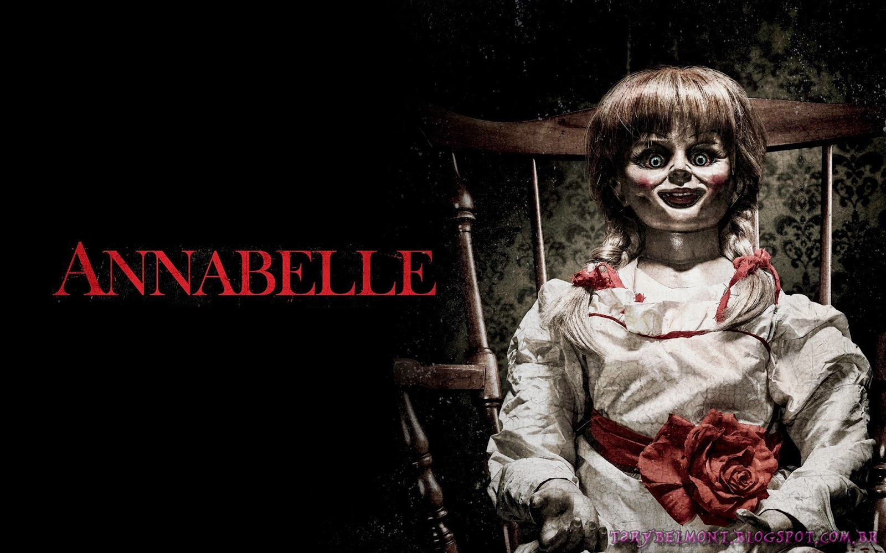
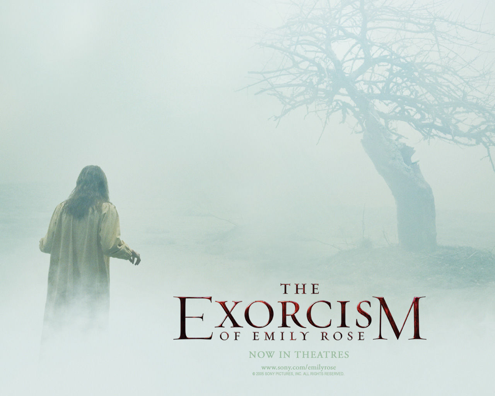
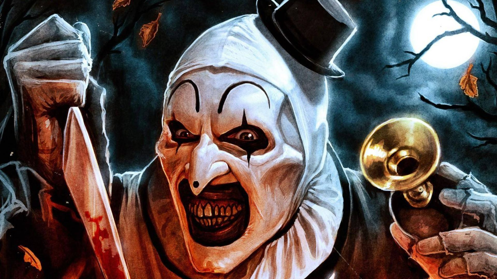
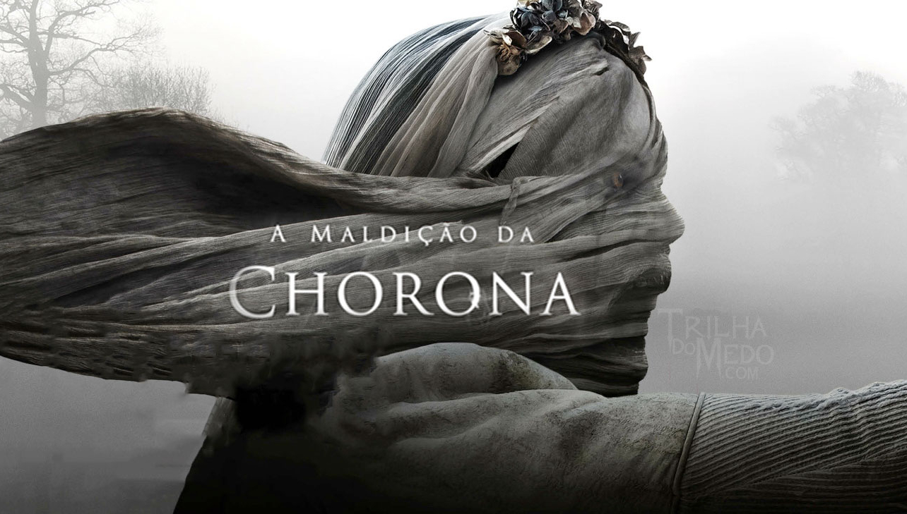

-

Annabelle
John Form acha que encontrou o presente ideal para sua esposa grávida, uma boneca vintage. No entanto, a alegria do casal não dura muito. Uma noite terrível, membros de uma seita satânica invadem a casa do casal em um ataque violento. Ao tentarem invocar um demônio, eles mancham a boneca de sangue, tornando-a receptora de uma entidade do mal.
Assistir
-

O exorcismo de Emily Rose
A jovem estudante Emily Rose começa a alucinar e ter surtos cada vez mais frequentes, que causam perda de memória. Católica praticante, ela aceita ser submetida a uma sessão de exorcismo. Quem a realiza é o sacerdote de sua paróquia, o padre Richard Moore. Porém, Emily morre durante o exorcismo, o que faz com que o padre seja acusado de assassinato. A advogada Erin Bruner aceita pegar a defesa do padre e argumenta que a condição de Emily não pode ser explicada somente pela ciência.
Assistir
-

Terrifier
A história mostra duas jovens, Tara (Jenna Kanell) e Victoria (Samantha Scaffidi), transitando embriagadas pela madrugada de sua cidade durante a celebração do Dia das Bruxas. Em determinado momento, elas se deparam com um tipo que parece o Pierrot atentado pelo satanás, com roupa alvinegra e maquiagem assustadora.
Assistir
-

A maldição da chorona
Em Los Angeles, na década de 1970, uma assistente social cria seus dois filhos sozinha depois de ser deixada viúva. Ela começa a ver semelhanças entre um caso que está investigando e a entidade sobrenatural chamada de Chorona. A lenda conta que, em vida, Chorona afogou seus filhos após um ataque de ciúmes e depois se jogou no rio, se debulhando em lágrimas. Agora ela chora eternamente, indo atrás e capturando outras crianças para substituir seus filhos.
Assistir
.jpeg)
Sorria
Após um paciente cometer um suicídio brutal em sua frente, a psiquiatra Rose é perseguida por uma entidade maligna que muda de forma. Enquanto tenta escapar desse pesadelo, Rose também precisa enfrentar seu passado conturbado para sobreviver.
Pânico
Um grupo de jovens enfrenta um assassino mascarado que testa seus conhecimentos sobre filmes de terror. A pequena cidade de Woodsboro nunca mais será a mesma.
.jpeg)
Corra!
Chris é um jovem fotógrafo negro que está prestes a conhecer os pais de Rose, sua namorada caucasiana. Na luxuosa propriedade dos pais dela, Chris percebe que a família esconde algo muito perturbador.
.jpeg)
Invocação do mal
Os investigadores paranormais Ed e Lorraine Warren trabalham para ajudar a família aterrorizada por uma entidade demoníaca em sua fazenda.
.jpeg)
A hora do pesadelo
Um grupo de adolescentes tem pesadelos horríveis, em que são atacados por um homem deformado com garras de aço. Ele apenas aparece durante o sono e, para escapar, é preciso acordar.
.jpeg)
Doutor sono
Na infância, Danny Torrance sobreviveu a uma tentativa de homicídio por parte do pai, um escritor perturbado pelos espíritos malignos do Hotel Overlook. Já adulto, traumatizado e alcoólatra. Danny se estabelece em uma pequena cidade, onde consegue um emprego no hospital local. Sua paz, porém, está com os dias contados a partir de quando cria um vínculo telepático com Abra, uma menina com poderes tão fortes quanto aqueles que ele bloqueia dentro de si.